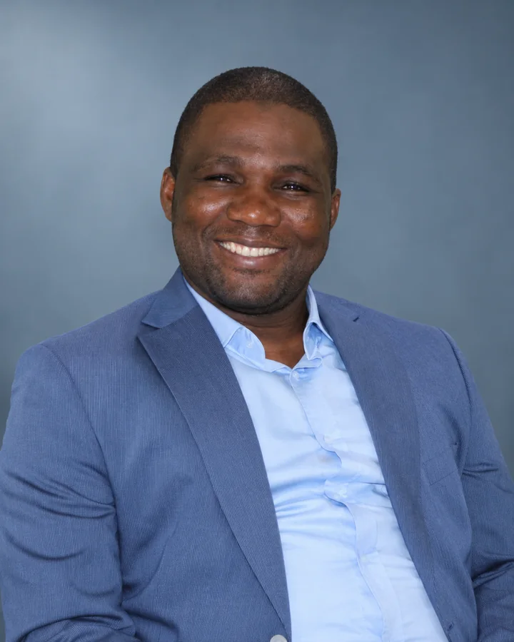

Pessoas e colaboração
Uma comunicação clara e uma coordenação próxima permitem alinhar as equipas técnicas com as necessidades de cada projecto.
Competência em telecomunicações com uma visão humana. Conheça a equipa e a forma de trabalhar da JAL TELECOM.
A JAL TELECOM reúne pessoas, tecnologia e infra-estruturas para responder às necessidades de telecomunicações em Angola.
A partir de Luanda, colocamos a nossa experiência no terreno ao serviço da instalação, rádio e transmissão, conectividade e assistência técnica. Começamos por compreender as suas necessidades e coordenar o âmbito de trabalho adequado ao projecto.
Vários profissionais da actual equipa da JAL TELECOM começaram a trabalhar juntos em projectos de telecomunicações da Mecgulf, em 2022. Nessa empresa, Afonso Lopes Narciso exerceu as funções de Director Técnico e Gestor de Projectos. Mais tarde, estes profissionais constituíram a JAL TELECOM como uma empresa autónoma, trazendo para a nova organização a sua experiência em instalação de redes e execução de trabalhos no terreno.
«Conectamos o futuro» expressa a ambição que orienta o nosso trabalho: transformar planos técnicos em ligações das quais dependem pessoas e organizações.
Conheça os nossos serviçosUma comunicação clara e uma coordenação próxima permitem alinhar as equipas técnicas com as necessidades de cada projecto.
Damos atenção às condições de trabalho, à preparação e aos pormenores práticos de cada intervenção.
Analisamos a forma como as infra-estruturas, os equipamentos e a assistência técnica se articulam no seu projecto.

As telecomunicações são um trabalho de equipa. As nossas fotografias mostram as pessoas, a preparação e os equipamentos envolvidos na execução de infra-estruturas.
Privilegiamos a colaboração no diálogo com clientes, equipas técnicas e todas as partes envolvidas nos projectos.
Fale com a nossa equipa
Um bom trabalho de engenharia começa por ouvir, definir o âmbito do projecto e cuidar dos pormenores.
Ouvimos as suas necessidades e analisamos as condições que o projecto deve respeitar.
Definimos consigo o âmbito técnico, as responsabilidades e um plano de execução adequado.
A nossa equipa de campo concretiza os requisitos de instalação e integração.
Mantemos o diálogo para responder às necessidades de manutenção e assistência técnica.
Partilhe os seus planos. Vamos encontrar o caminho mais adequado.